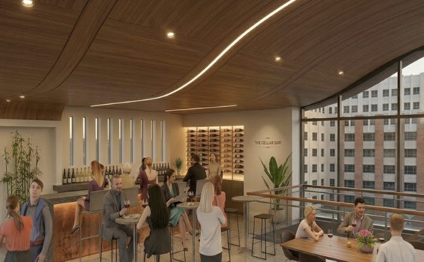
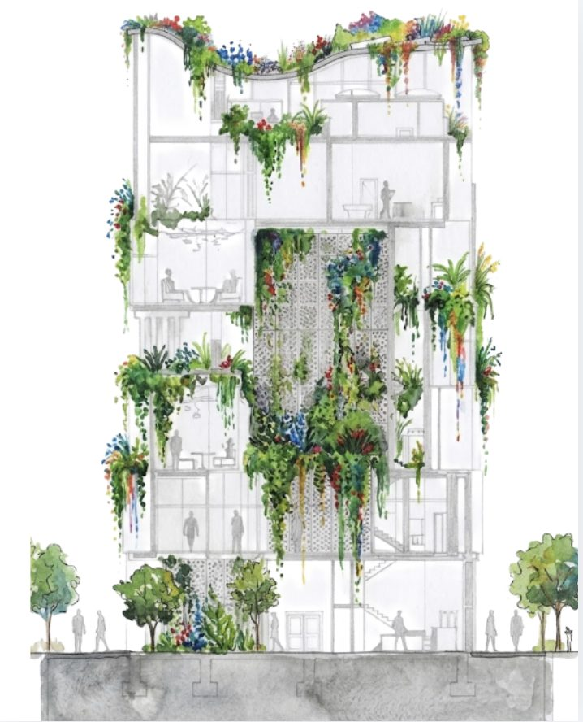

Sophomore Year — Spring 2026
Salvia Modern House Museum
A biomimetic design inspired by Salvia farinacea, stacking public program over private retreat: lobby and café, two art galleries, a community hub, two artist's lofts, and a rooftop vinothèque. The building is organized as a stacked spatial sequence — each level a gradual transition from public to private — built from concrete, black cherry wood, dwarf yaupon, and glass. Its form and systems are shaped throughout by COTE guidelines for integration, community, ecology, water, and energy: a hybrid passive-and-mechanical ventilation strategy using stack effect and wind-driven exhaust, a 1,500 sf roof harvesting roughly 29,900 gallons of water a year, and a 15kW PV system generating close to 22,000 kWh annually.
Program — galleries, lofts, community hub, vinothèque
Materials — concrete, black cherry, dwarf yaupon, glass
Strategy — COTE / passive ventilation, rainwater, PV